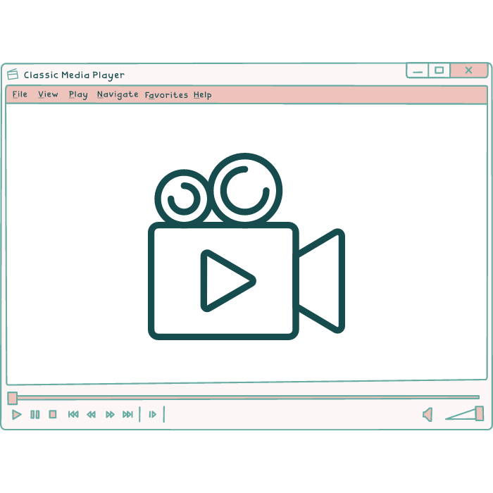

Opskrifter / Den perfekte sommertop
Den perfekte sommertop
Her finder du opskriften på den perfekte sommertop ! Lav den i lige den farve du bedst kan lide.
Denne top er ideel udover en bikini, derfor anbefales det at vælge noget garn som tåle at blive vådt!
Den perfekte Sommertop

Her er hvad du skal bruge!
Materialer:
- Hæklenål i passende størrelse til dit garnvalg
(jeg bruger en 4.5 mm nål til dette)
- Bomuldsgarn i to forskellige farver (A og B)
- Stoppenål
- Saks
Størrelse: One-size-fits-most (Du kan tilpasse størrelsen ved at tilføje eller fjerne rækker)
Opskriften
Fronten:
Start med farve A. Lav en løkke på hæklenålen og lav 100 luftmasker.
Vend arbejdet og lav 1 fastmaske i den 2. luftmaske fra nålen. Lav derefter 1 fastmaske i hver luftmaske hele vejen ned. Vend arbejdet.
Gentag række 2 i alt 20 rækker med farve A.
Skift til farve B. Lav 1 luftmaske, og lav 1 fastmaske i hver maske hele vejen ned. Vend arbejdet.
Gentag række 4 i alt 10 rækker med farve B.
Ryggen:
Start med farve A. Lav en løkke på hæklenålen og lav 100 luftmasker.
Vend arbejdet og lav 1 fastmaske i den 2. luftmaske fra nålen. Lav derefter 1 fastmaske i hver luftmaske hele vejen ned. Vend arbejdet.
Gentag række 2 i alt 30 rækker med farve A.
Montering:
Fold for- og rygstykket sammen med forsiden udad og placer dem oven på hinanden.
Sy siderne sammen ved hjælp af stoppenålen og farve A, og lad en åbning til ærmegabet.
Sy skuldersømmene sammen.
Afslut ved at hæfte og klippe enderne af trådene.
Sådan ser toppen ud på!
Fra siden

Forfra

Bagfra

Videotutorial til sommertoppen
INDSÆTTES HER
Foretrækker du en visuel guide?